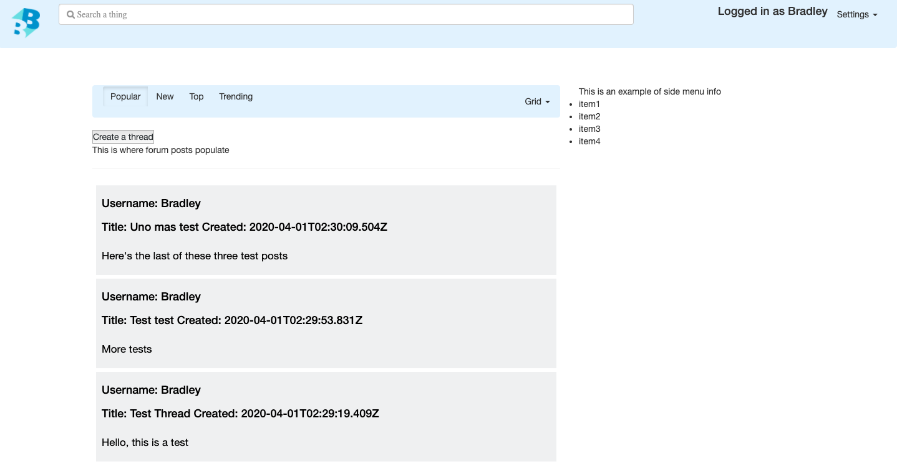

CilantroAudit
featured
Scope
Who: International Paper Specialty Ink and Plate Division -- Sponser: Todd, the manager.
What: Housekeeping auditing software that simplifies auditing processes, making it more functional and more efficient.
How: To develop this project, my team of 8 followed Agile development methodologies, namely Scrum. We also followed the builder design pattern, and git feature-branch workflow.
Technologies
- Python - PEP 8 Standard
- Kivy - User Interface
- MongoDB - Database
- Git - Version Control
- CircleCI - Continuous Delivery & Integration
Accomplishments
- Participate in Scrum ceremonies. Spent time as scrum master. Efficient self-lead coding, as well as pair-programming.
- Create multiple features that massively increase efficiency and automate administrative tasks.
- Develop tests, refactor code, write and improve upon documentation.
- Establish database with a sub-team of 3, and teach the team how to use our MongoDB database.
BroadBoards.net
featured

Scope
Who: This project started out as a group project for my Full-Stack Web Development class. The team is still proactively improving upon it beyond the course.
What: BroadBoards is a social media app in early development, with the end goal of breaking down internet echo-chambers.
How: To develop this application, my team of 3 are following Agile methodologies. I am acting as team-lead and as a developer.
Technologies
- ReactJS
- Node.js & Express
- PostgreSQL
- AWS EC2, Amazon RDS, Amazon Route 53.
- Git
Accomplishments
- Plan and lead team meetings, keep track of project board, assist team members as needed.
- Implemented user account creation, using modern encryption, and persistent user login.
- Integrated postgreSQL database with our server for the central feed and user accounts.
- Deployed the site on AWS EC2, using Amazon Route 53 for DNS routing. Managed traffic using proxy-server(Nginx) and an AWS load-balancer.
To see the rest of my work, visit my Github.